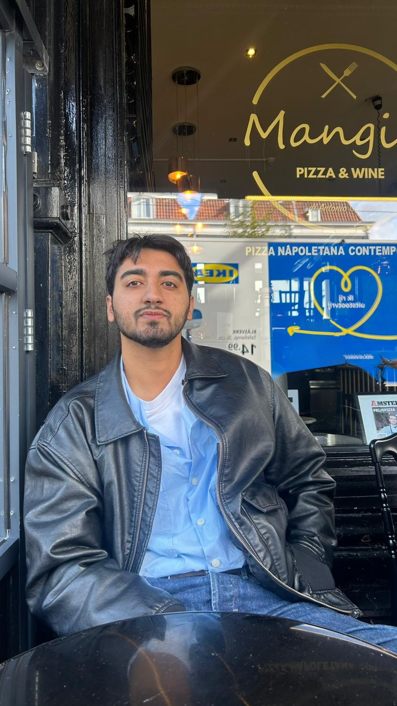

Hi, I'm Can
4th-year Geomatics Engineering student at Hacettepe University, Ankara.
Background
Between March and August 2026 I worked in the GIS unit at ELTEMTEK, processing LiDAR point clouds, producing orthophotos and analysing violations along energy transmission lines.
Interests
GIS, remote sensing, LiDAR, photogrammetry, GNSS and Web GIS. Outside the classroom, I spend my time sailing.
Contact
Email: candagdeviren@hacettepe.edu.tr
GitHub: github.com/candagdeviren